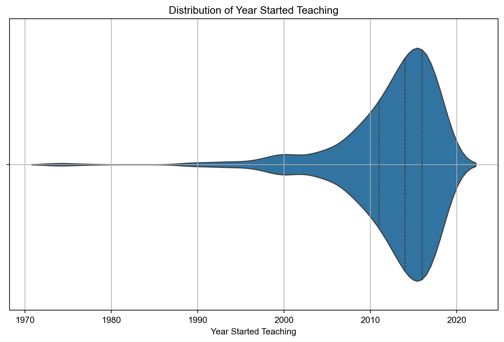

MapMind (Part III): Digital Divides: Mindfulness Teaching & Technology
Code
# Import librariesimport numpy as npimport pandas as pdimport itertoolsimport statsmodels.formula.api as smfimport statsmodels.api as smfrom scipy.stats import chi2_contingencyfrom prettytable import PrettyTableimport seaborn as snsimport matplotlib.pyplot as pltimport plotly.graph_objects as gofrom sklearn.model_selection import train_test_splitfrom sklearn.linear_model import LogisticRegressionfrom sklearn.metrics import classification_report, confusion_matrix, roc_auc_scorefrom sklearn.preprocessing import LabelEncoder, OneHotEncoderfrom sklearn.impute import SimpleImputerfrom imblearn.over_sampling import SMOTE
1 Executive Summary
The final part of the MapMind project looks at how mindfulness teachers relate to technology, and uses predictive modeling using Chi-Squared tests and logistic regression to identify the factors that predict whether mindfulness teachers engage in online teaching based on several features, including gender, years of teaching experience, whether they hold a management position, and their nationality.
We ask the following research question:
What demographic factors influence use of technology, use of a professional website, and online teaching of mindfulness?
2 Data Science Tools
In this part of the project, I use numpy and pandas for data analysis; SciPy, statsmodels, and Scikit-Learn for statistical analysis; and PlotlyExpress for data visualisation. I use Synthetic Minority Over-sampling Technique (SMOTE) to increase the number of instances in the dataset.
3 Findings
Majority of mindfulness teachers start to teach mindfulness between 2012-2014.
Majority use technology, have a website, but had not taught online.
We found significant correlations in how demographic and social factors influence technology usage, use of a professional website, and online teaching. This is crucial for understanding diverse needs in the digital landscape of mindfulness and wellness teaching.
When we analysed the factors which most significantly influence mindfulness teaching, we found:
Formal education level is a more significant predictor of technology use in mindfulness teaching than age.
3.1 Majority start to teach mindfulness between 2012-2014
In the analysis of the year_started variable from a mindfulness teaching survey, Python libraries pandas, prettytable, seaborn, and matplotlib.pyplot were employed. The survey data revealed that among 722 respondents, the average start year of teaching mindfulness was 2012, with a standard deviation of 6 years, ranging from 1974 to 2019. The median start year was 2014, indicating a more recent trend in mindfulness teaching.
Complementing these statistics, a violin plot was generated to visualize the distribution of the start years. This plot not only confirmed the central tendency and spread captured by the numerical data but also provided a deeper insight into the density and distribution patterns of the years when respondents began their mindfulness teaching journey. The combined use of descriptive statistics and the violin plot offers a comprehensive understanding of the temporal trends in mindfulness teaching among the survey participants.
Overall, our participants start to teach mindfulness between 1974 and 2019, with 50% starting to teach from 2014, and the mean average starting to teach in 2012. These years correspond with the development of popular technologies - such as computers, the internet, and mobile phones. But while there are a substantial number of participants who start teaching mindfulness in the past 10 years in particular, we should remember that correlation is not causation. The rise of mindfulness teaching might be correlated with the rise of technology, rather than caused by the rise of technology.
Code
# Load the survey dataframesurvey = pd.read_pickle('data/tidied_survey.pkl')# Remove rows with NA from the 'year_started' columnsurvey_clean = survey.dropna(subset=["year_started"])# Generate descriptive statistics for 'year_started'descriptive_stats = survey_clean['year_started'].describe()# Round the mean and convert all statistics to integersdescriptive_stats_rounded = descriptive_stats.round().astype(int)# Prepare data for the tablecells_data = {"Statistic": descriptive_stats_rounded.index,"Value": descriptive_stats_rounded.values}# Create the tablefig = go.Figure(data=[go.Table( header=dict(values=["Statistic", "Value"], fill_color='lightgrey', align='left', font=dict(color='black', size=12)), cells=dict(values=[cells_data[k] for k in cells_data.keys()], fill_color='white', align='left', font=dict(color='black', size=11), height=30) # Smaller height for rows)])fig.update_layout( title_text='Year Started Teaching Mindfulness', title_x=0.5, title_font=dict(size=14, family="Verdana"), paper_bgcolor='white', plot_bgcolor='white', margin=dict(l=20, r=20, t=50, b=20) # Adjusted margins to center the table while keeping title)# Set the size of the tablefig.update_layout(width=500, height=300)fig.show()
Code
# Load the survey dataframesurvey = pd.read_pickle('data/tidied_survey.pkl')# Remove rows with NA from the 'year_started' columnsurvey_clean = survey.dropna(subset=["year_started"])# Create a violin plot using seaborn for the 'year_started' variableplt.figure(figsize=(10, 6))sns.violinplot(data=survey_clean, x="year_started", inner="quartile")# Customize the plotplt.title('Distribution of Year Started Teaching')plt.xlabel('Year Started Teaching')plt.grid(True)sns.set_style("whitegrid")# Show the plotplt.show()

3.2 Majority use technology, have a website, but had not taught online
We found some interesting contradictions in our data relating to how our participants engage with technology.
The majority of our participants use technologies when teaching mindfulness. These technologies include smartphone apps, books, compact discs, course notes, MP3/podcasts, posters/PowerPoint, physical props such as foot items or musical instruments (excluding chairs/cushions), websites, video clips, flipcharts.
The majority have a professional website for their mindfulness work.
The majority had never taught mindfulness online.
The following code analyses our participants’ use of technology, professional websites, and online teaching. Pandas is used for data manipulation and Plotly Express for generating the graph. In the results, a significant majority (91.48%, n=644) of participants use technology in their teaching. Regarding professional website usage, a majority (60.31%, n=392) have one, while 39.69% (n=258) do not.
Code
import pandas as pdimport plotly.express as px# Load the survey dataframesurvey = pd.read_pickle('data/tidied_survey.pkl')# Convert data to long format for facetingsurvey_long = survey.melt(id_vars=[], value_vars=['technology', 'website', 'online_teaching'], var_name='demographic', value_name='value')# Calculate frequency for each value within each demographicsurvey_freq = survey_long.groupby(['demographic', 'value'], observed=True).size().reset_index(name='freq')# Remove NA valuessurvey_freq = survey_freq.dropna(subset=['value'])# Convert the 'value' column to a categorysurvey_freq['value'] = survey_freq['value'].astype('category')# Arrange by demographic and frequencysurvey_freq = survey_freq.sort_values(by=['demographic', 'freq'], ascending=[True, True])# Calculate percentagesurvey_freq['percentage'] = survey_freq.groupby('demographic')['freq'].transform(lambda x: x / x.sum() *100)# Plot with Plotly Expressfig = px.bar(survey_freq, x='value', y='percentage', color='value', facet_col='demographic', labels={'value': 'Value', 'percentage': 'Percentage'}, category_orders={'demographic': ['technology', 'website', 'online_teaching']}, height=400, width=1000, hover_data={'freq': ':.0f', 'percentage': ':.2f%'})# Update layout to match the aestheticsfig.update_layout( title_text="Mindfulness Teachers' Use of Technologies", title_x=0.5, title_font=dict(size=14, family="Verdana"), showlegend=False, paper_bgcolor='white', plot_bgcolor='white')# Update axes labelsfig.for_each_annotation(lambda a: a.update(text=a.text.split("=")[-1]))fig.update_xaxes(showticklabels=True)fig.update_yaxes(title='Percentage')fig.show()
As for online teaching, a larger proportion (74.30%, n=532) have not taught mindfulness online, while 25.70% (n=184) have. These statistics provide insights into the digital engagement of mindfulness teachers, highlighting a strong inclination towards using technology and websites, but less so for online teaching.
Code
import pandas as pdimport plotly.express as pximport plotly.graph_objects as go# Load the survey dataframesurvey = pd.read_pickle('data/tidied_survey.pkl')def plot_bar(data, var_name, title):# Ensure the variable is categorical data[var_name] = pd.Categorical(data[var_name])# Filter out missing values filtered_data = data.dropna(subset=[var_name])# Count occurrences with observed=True count_data = filtered_data.groupby(var_name, observed=True).size().reset_index(name='n')# Sort by frequency in descending order count_data = count_data.sort_values(by='n', ascending=False)# Create a bar plot fig = px.bar(count_data, x='n', y=var_name, orientation='h', color=var_name, title=title, labels={'n': 'Frequency'}) fig.update_layout(showlegend=False, template='plotly_white')return fig, count_data# Generate plot and frequency data for online_n variablep, freq_data = plot_bar(survey, 'online_n', 'Number of Students Taught Online')# Calculate percentages for the tabletotal_count = freq_data['n'].sum()freq_data['Percentage'] = (freq_data['n'] / total_count) *100# Create a Plotly tablefig_table = go.Figure(data=[go.Table( header=dict(values=["Value", "Frequency", "Percentage"], fill_color='paleturquoise', align='left'), cells=dict(values=[freq_data['online_n'], freq_data['n'], freq_data['Percentage'].apply(lambda x: f"{x:.2f}%")], fill_color='lavender', align='left'))])# Add title to the tablefig_table.update_layout(title_text="Number of Students Taught Online", title_x=0.5)# Display the Plotly tablefig_table.show()# Display the bar plotp.show()
3.3 What factors predict mindfulness teaching?
Statistical tests were conducted to find out the factors which significantly predict mindfulness teaching.
Chi-Squared tests were conducted to identify significant relations between pairs of variables. The significant results are visualised below using an interactive scatter plot.
The significant results are then displayed in a Plotly Express table sorted by Chi-Squared statistic, which indicates the strength of the significant relationship.
3.3.1 Predictors
Age (age)
Gender (gender)
Nations where mindfulness is taught (nations)
Ethnicity (ethnicity)
Sexuality (sexuality)
Disability (disability)
Employment (employment_other_type)
Formal Education (formal_education)
Management (management)
Supervise Employees (supervise_emp)
Social Class (social_class)
Year Started Teaching (can act as either predictor or outcome variable) (year_started)
3.3.2 Outcomes
Technology (technology)
Website (website)
Online Teaching (online_teaching)
Number of Students Taught Online (online_n)
3.3.3 Significant Predictors and Outcomes
We conducted in-depth analyses of the predictor-and-outcome pairs which are significantly related. This report focuses on the factors which influence mindfulness teaching in relation to technology. The rest of the report summarises the in-depth analyes of the following significantly related factors.
Age and use of a professional website Age and use of technology
Formal education and use of technology
Gender and online teaching Gender and number of students taught online
Management role and online teaching Management role and number of students taught online Management role and use of a professional website
Nations where mindfulness is taught and number of students taught online Nations where mindfulness is taught and online teaching Nations where mindfulness is taught and use of a professional website
Year started teaching and number of studens taught online Year started teaching and online teaching Year started teaching and use of a professional website
Code
# Load the survey dataframesurvey_social_class_merged = pd.read_pickle('data/survey_social_class_merged.pkl')# Define independent and dependent variablesindependent_vars = ['age', 'gender', 'nations', 'ethnicity', 'sexuality', 'disability', 'employment_other_type', 'formal_education', 'management', 'supervise_emp', 'social_class']dependent_vars = ['technology', 'website', 'online_teaching', 'online_n']year_started = ['year_started'] # can act as both IV and DV# Function to perform chi-squared tests and return results as a DataFramedef perform_chi_squared_tests(data): results = []# Create all unique pairs of IVs and DVs, including year_started as bothfor var1, var2 in itertools.product(independent_vars + year_started, dependent_vars + year_started):if var1 != var2:# Drop NaN values separately for the variables being tested data_cleaned = data.dropna(subset=[var1, var2])# Conduct chi-squared test table = pd.crosstab(data_cleaned[var1], data_cleaned[var2]) chi2_stat, p_val, dof, _ = chi2_contingency(table)# Check if the relationship is significant (using a threshold, e.g., 0.05)if p_val <0.05:# Store results in list results.append([f"{var1.capitalize()} vs {var2.capitalize()}", chi2_stat, dof, p_val, len(data) -len(data_cleaned),f"{var1}: {data_cleaned[var1].nunique()}, {var2}: {data_cleaned[var2].nunique()}"])# Convert results to DataFrame results_df = pd.DataFrame(results, columns=["Test", "Chi-Squared Statistic", "Degrees of Freedom", "P-Value", "NaNs Dropped", "Unique Cases"])# Sort results by chi-squared statistic (descending) results_df.sort_values(by="Chi-Squared Statistic", ascending=False, inplace=True)return results_df# Perform chi-squared testssignificant_results_df = perform_chi_squared_tests(survey_social_class_merged)# Use Plotly Express to create an interactive scatter plotfig = px.scatter(significant_results_df, x="Test", y="Chi-Squared Statistic", size="Chi-Squared Statistic", color="P-Value", hover_data=["Degrees of Freedom", "NaNs Dropped", "Unique Cases"], title="Chi-Squared Test Results: Tests vs Chi-Squared Statistic", labels={"Test": "Test", "Chi-Squared Statistic": "Chi-Squared Statistic", "P-Value": "P-Value"}, category_orders={"Test": significant_results_df["Test"]}) # Order x-axis based on sorted Test namesfig.show()
Code
import pandas as pdfrom scipy.stats import chi2_contingencyimport itertoolsimport plotly.graph_objects as go# Load the survey dataframesurvey_social_class_merged = pd.read_pickle('data/survey_social_class_merged.pkl')# Define independent and dependent variablesindependent_vars = ['age', 'gender', 'nations', 'ethnicity', 'sexuality', 'disability', 'employment_other_type', 'formal_education', 'management', 'supervise_emp', 'social_class']dependent_vars = ['technology', 'website', 'online_teaching', 'online_n']year_started = ['year_started'] # can act as both IV and DV# Function to perform chi-squared tests and return Plotly table for significant resultsdef perform_chi_squared_tests(data): significant_results = [] # List to hold the significant results# Create all unique pairs of IVs and DVs, including year_started as bothfor var1, var2 in itertools.product(independent_vars + year_started, dependent_vars + year_started):if var1 != var2:# Drop NaN values separately for the variables being tested data_cleaned = data.dropna(subset=[var1, var2])# Count unique cases for each variable cases_var1 = data_cleaned[var1].nunique() cases_var2 = data_cleaned[var2].nunique()# Conduct chi-squared test table = pd.crosstab(data_cleaned[var1], data_cleaned[var2]) chi2_stat, p_val, dof, _ = chi2_contingency(table)# Check if the relationship is significant (using a threshold, e.g., 0.05)if p_val <0.05:# Append results to the list result = [f"{var1.capitalize()} vs {var2.capitalize()}",round(chi2_stat, 2), dof, p_val, data[var1].isna().sum() + data[var2].isna().sum(),f"{var1}: {cases_var1}, {var2}: {cases_var2}"] significant_results.append(result)# Sort the results by Chi-Squared statistic in descending order significant_results.sort(key=lambda x: x[1], reverse=True)# Create a Plotly table fig = go.Figure(data=[go.Table( header=dict(values=["Test", "Chi-Squared Statistic", "Degrees of Freedom", "P-Value", "NaNs Dropped", "Unique Cases"]), cells=dict(values=list(zip(*significant_results))) )]) fig.update_layout(title="Significant Results of Chi-Squared Tests (Sorted by Chi-Squared Statistic)")return fig# Perform chi-squared testssignificant_results_fig = perform_chi_squared_tests(survey_social_class_merged)# Show the tablesignificant_results_fig.show()
Code
# Load the survey dataframesurvey_social_class_merged = pd.read_pickle('data/survey_social_class_merged.pkl')# Define independent and dependent variablesindependent_vars = ['age', 'gender', 'nations', 'ethnicity', 'sexuality', 'disability', 'employment_other_type', 'formal_education', 'management', 'supervise_emp', 'social_class']dependent_vars = ['technology', 'website', 'online_teaching', 'online_n']year_started = ['year_started'] # can act as both IV and DV# Function to perform chi-squared tests and return PrettyTables for significant resultsdef perform_chi_squared_tests(data): significant_results = [] # List to hold the significant results# Create all unique pairs of IVs and DVs, including year_started as bothfor var1, var2 in itertools.product(independent_vars + year_started, dependent_vars + year_started):if var1 != var2:# Drop NaN values separately for the variables being tested data_cleaned = data.dropna(subset=[var1, var2])# Count unique cases for each variable cases_var1 = data_cleaned[var1].nunique() cases_var2 = data_cleaned[var2].nunique()# Conduct chi-squared test table = pd.crosstab(data_cleaned[var1], data_cleaned[var2]) chi2_stat, p_val, dof, _ = chi2_contingency(table)# Check if the relationship is significant (using a threshold, e.g., 0.05)if p_val <0.05:# Append results to the list result = [f"{var1.capitalize()} vs {var2.capitalize()}",round(chi2_stat, 2), dof, p_val, data[var1].isna().sum() + data[var2].isna().sum(),f"{var1}: {cases_var1}, {var2}: {cases_var2}"] significant_results.append(result)# Sort the results by Chi-Squared statistic in descending order significant_results.sort(key=lambda x: x[1], reverse=True)# Create PrettyTable significant_results_pt = PrettyTable() significant_results_pt.field_names = ["Test", "Chi-Squared Statistic", "Degrees of Freedom", "P-Value", "NaNs Dropped", "Unique Cases"]# Add sorted results to PrettyTablefor result in significant_results: significant_results_pt.add_row(result)return significant_results_pt# Perform chi-squared testssignificant_results_table = perform_chi_squared_tests(survey_social_class_merged)# Print the tablesprint("Significant Results of Chi-Squared Tests (Sorted by Chi-Squared Statistic)")print(significant_results_table)
4 Which factors most influence mindfulness teaching?
4.1 Summary of Logistic Regression Analysis
4.1.1 Overall Interpretation
Formal Education as a Stronger Predictor: Formal education level is a more significant predictor of technology use in mindfulness teaching than age.
Moderate Accuracy: The model has an accuracy of approximately 61.67%, indicating moderate predictive power.
Balanced Predictions: The model shows balanced precision, recall, and F1-scores for both classes (technology use and non-use).
The data was loaded and preprocessed, age and formal education were encoded, and SMOTE was used to balance the dataset. A logistic regression model was built and trained. The model coefficients were calculated to indicate the influence of age and formal education on use of technology. The coefficients show for age (0.0592) and formal education (0.7411) suggest formal education is a stronger influence than age on use of technology.
Formal education level is a more significant predictor of technology use in mindfulness teaching than age.
However, the ROC AUC - which assesses the model’s ability to distinguish between classes (in this case, age and formal education), was approximately 0.604, indicating limited discrimination ability between classes.
The confusion matrix and classification report provides detailed insights into model performance, reflecting a balance between precision and recall for predicting both technology use and non-use.
Overall, this analysis suggests the need for further model refinement and consideration of additional variables to enhance predictive accuracy.
Code
# Load the survey dataframesurvey_clean = pd.read_pickle('data/tidied_survey.pkl')# Convert the necessary columns to 'category' typecategory_columns = ['age', 'technology', 'formal_education']for col in category_columns: survey_clean[col] = survey_clean[col].astype('category')# Drop rows with NaN values in the relevant columnssurvey_clean = survey_clean.dropna(subset=category_columns).copy()# Convert 'technology' from Yes/No to 0/1survey_clean.loc[:, 'technology'] = survey_clean['technology'].map({'Yes': 1, 'No': 0})# Encoding 'age' and 'formal_education'age_mapping = {'25-29': 1, '30-34': 2, '35-39': 3, '40-44': 4, '45-49': 5,'50-54': 6, '55-59': 7, '60-64': 8, '65+': 9, 'Prefer not to say': 10}education_mapping = {'Non-degree': 1, 'Degree': 2, 'Higher degree': 3, 'Prefer not to say': 4}survey_clean.loc[:, 'age_encoded'] = survey_clean['age'].map(age_mapping)survey_clean.loc[:, 'formal_education_encoded'] = survey_clean['formal_education'].map(education_mapping)# Ensure no NaN values remainsurvey_clean = survey_clean.dropna(subset=['age_encoded', 'formal_education_encoded'])# Define predictor variables and outcome variableX = survey_clean[['age_encoded', 'formal_education_encoded']]y = survey_clean['technology']# Addressing Imbalance using SMOTEsm = SMOTE(random_state=42)X_res, y_res = sm.fit_resample(X, y)# Split dataset into training and testing setsX_train, X_test, y_train, y_test = train_test_split(X_res, y_res, test_size=0.3, random_state=0)# Build logistic regression modellogreg = LogisticRegression()logreg.fit(X_train, y_train)# Predict test set results and calculate accuracyy_pred = logreg.predict(X_test)# Model Coefficientsprint("\nModel Coefficients:")for col, coef inzip(X.columns, logreg.coef_[0]):print(f"{col}: {coef}")# Evaluation Metricsaccuracy = logreg.score(X_test, y_test)roc_auc = roc_auc_score(y_test, logreg.predict_proba(X_test)[:, 1])conf_matrix = confusion_matrix(y_test, y_pred)class_report = classification_report(y_test, y_pred, zero_division=0)print('\nAccuracy of logistic regression classifier on test set:', accuracy)print('\nROC AUC Score:', roc_auc)print('\nConfusion Matrix:\n', conf_matrix)print('\nClassification Report:\n', class_report)
5 Factors Influencing Use of a Professional Website
We conducted in-depth analysis of the factors influencing the use of a professional website. The model considers various predictors:
age: The age of the teachers.
nations: The nations in which they teach.
management: Whether they hold a management position.
year_started: The year when they started teaching.
The dataset was preprocessed by dropping rows with missing values and by encoding categorical variables. management and website were converted from Yes/No to binary (0/1), age was mapped to numerical categories based on ranges, nations was encoded as a numeric variable, and year_started was converted to an integer type.
The dataset was split into training and test sets (70-30 split). A logistic regression model was trained on the processed data, due to the outcome variable being categorical.
5.1 Results
The model shows that having a management role is a significant positive predictor for using a professional website, while age and nations where mindfulness is taught show a negative correlation. However, the overall accuracy and ROC AUC score suggest that the model has moderate predictive power, and there is substantial room for improvement.
5.1.1 Website Variable Distribution
Having a Website (1): 392
Not Having a Website (0): 258
5.1.2 Model Coefficients
The model coefficients suggest the following positive correlations:
Management role is positively correlated with having a professional website (0.6109)
Very slight positive impact on the likelihood of having a website the later year started teaching (0.00041)
The model coefficients suggest the following negative correlations:
Negative correlation between nations where mindfulness is taught and having a professional website (-0.1856)
Slight decrease in likelihood of having a professional website with increasing age (-0.06271)
We explored in greater depth the relation between the nations where mindfulness is taught and the use of technology.
We tested whether there is a relationship between the country (or nation) where people are teaching mindfulness and the following behaviors or conditions:
Whether they use technology or not.
Whether they teach online.
The number of students they teach online.
We conducted Chi-Squared tests and Logistic Regression analyses to test for significant relationships.
We found:
No significant relationship between the nation where mindfulness is taught and whether the teacher uses technology: This means that the likelihood of someone using technology is roughly the same, regardless of which country the teach mindfulness in. All nations, except Scotland, tend to use technology less than England. However, none of these differences are statistically significant, meaning we can’t confidently say these differences aren’t due to random chance.
Significant relationship between the nation where mindfulness is taught and whether the teacher teaches online: depending on the country where mindfulness is taught, teachers are more likely to teach online than in others.
Significant relationship between the country where mindfulness is taught and the number of students they teach online: some mindfulness teachers might be teaching more students online compared to those from other countries.
Code
# Load the survey dataframesurvey_clean = pd.read_pickle('data/tidied_survey.pkl')# Chi-squared testscontingency_tables = {'technology': pd.crosstab(survey_clean['nations'], survey_clean['technology']),'online_teaching': pd.crosstab(survey_clean['nations'], survey_clean['online_teaching']),'online_n': pd.crosstab(survey_clean['nations'], survey_clean['online_n']),'website': pd.crosstab(survey_clean['nations'], survey_clean['website'])}# Display chi-squared test results and contingency tablesresults_pt = PrettyTable(["Test", "Chi-Squared Statistic", "Degrees of Freedom", "P-Value"])for test, table in contingency_tables.items(): chi2_stat, p_val, dof, _ = chi2_contingency(table) results_pt.add_row([f"Nations vs {test.capitalize()}", chi2_stat, dof, p_val]) table_pt = PrettyTable(['Nation'] +list(table.columns))for row in table.itertuples(): table_pt.add_row([row.Index] +list(row[1:]))print(f"Contingency Table for {test.capitalize()}\n{table_pt}\n")print(f"Results of Chi-Squared Tests\n{results_pt}\n")# Logistic Regression for 'website'import statsmodels.api as smlogistic_model = smf.glm(formula='website ~ nations', family=sm.families.Binomial(), data=survey_clean).fit()coef_summary = logistic_model.summary2().tables[1]odds_ratios = coef_summary['Coef.'].apply(np.exp)lower_95 = coef_summary['[0.025'].apply(np.exp)upper_95 = coef_summary['0.975]'].apply(np.exp)results_table = PrettyTable(['Variable', 'Odds Ratio', '95% CI Lower', '95% CI Upper'])for variable, odds_ratio, ci_lower, ci_upper inzip(coef_summary.index, odds_ratios, lower_95, upper_95): results_table.add_row([variable, odds_ratio, ci_lower, ci_upper])print(f"Logistic Regression Results\n{results_table}\n")# Plotting Odds Ratiosplot_data = pd.DataFrame({'Variable': coef_summary.index,'Odds Ratio': odds_ratios,'95% CI Lower': lower_95,'95% CI Upper': upper_95})sns.pointplot(x='Odds Ratio', y='Variable', data=plot_data, join=False, capsize=0.1, linestyle='none')plt.axvline(x=1, linestyle='--')plt.xlabel('Odds Ratio with 95% CI')plt.ylabel('Variable')plt.title('Odds of Website Usage by Nation')plt.show()# Participants count from each nationnation_counts = survey_clean['nations'].value_counts()nation_counts_table = PrettyTable(["Nation", "Count"])for nation, count in nation_counts.items(): nation_counts_table.add_row([nation, count])print(f"Number of Participants from Each Nation\n{nation_counts_table}\n")
6.1 Nation where mindfulness is taught influences uses of professional website
We tested for differences in use of a professional website by nation (country).
We found:
Wales and Scotland show a moderate increase in website usage compared to England, and these increases are statistically significant: This means that the observed higher website usage in Wales and Scotland is not just due to random chance, but likely reflects a real trend.
A strong decrease in website usage in the “Mixed” group compared to England, and this decrease is highly significant: This suggests a robust trend of lesser website usage in this group relative to England.
A decrease in website usage in Northern Ireland compared to England, but the strength of this decrease is “very low”, and it’s not statistically significant: we can’t be confident that this observed decrease isn’t just due to random chance.
In summary, we found that mindfulness teachers who teach in both Wales and Scotland are using professional websites more than those teaching in England, with those teaching in Wales leading slightly.
Those teaching in Wales are 2.38 times more likely to use websites compared to those in England.
Those teaching in Scotland are 1.78 times more likely to use websites than those in England.
The odds ratio for Northern Ireland is “nearly 0”, indicating that there’s almost no chance for teachers from Northern Ireland to use a website compared to England. Participants teaching in Northern Ireland are hardly using websites at all, when compared to those teaching in England.
The “Mixed” group also tends to use websites less than those teaching in England, with an odds ratio of 0.37.
We tested for differences in online teaching by nation (country).
We found:
Mindfulness teachers teaching in Scotland seem to be doing more online teaching compared to England, while teachers who teach in a “Mix” of nations do significantly less. The other nations don’t show significant differences from England in terms of online teaching.
6.2 Factors Predicting Online Teaching
A logistic regression model was trained to predict whether mindfulness teachers engage in online teaching based on several features, including gender, years of teaching experience, whether they hold a management position, and their nationality.
The results show the following positive associations:
Holding a management position is positively associated with online teaching (0.625, positive coefficient)
Being male is positively associated with online teaching (0.495, positive coefficient)
Having an “Other” gender is positively associated with online teaching (0.0341, positive coefficient)
Preferring not to specify gender is positively associated with online teaching (0.0113, positive coefficient)
The results show the following negative associations:
The number of years a teacher has been teaching is negatively associated with online teaching (-0.000033, negative coefficient)
The nation where mindfulness is taught has a negative association with online teaching (-0.258, negative coefficient)
The logistic regression model achieved an accuracy of 67% on the test set, indicating that it can predict online teaching behavior to some extent. However, it’s important to note that there is room for improvement in terms of precision and recall, especially for class 1 (engaging in online teaching, 43%). Further analysis and feature engineering may help improve the model’s performance.
6.2.1 Model Performance:
Accuracy of the logistic regression classifier on the test set: 0.67 (67%)
ROC AUC Score: 0.628
Confusion Matrix:
True Positives: 30
False Positives: 39
True Negatives: 102
False Negatives: 27
6.2.2 Classification Report:
Precision for class 0 (not engaging in online teaching): 0.79
Recall for class 0: 0.72
F1-score for class 0: 0.76
Precision for class 1 (engaging in online teaching): 0.43
Recall for class 1: 0.53
F1-score for class 1: 0.48
Code
# Load the survey dataframesurvey_clean = pd.read_pickle('data/tidied_survey.pkl')# Convert 'management' and 'online_teaching' from Yes/No to 0/1survey_clean['management'] = survey_clean['management'].map({'Yes': 1, 'No': 0})survey_clean['online_teaching'] = survey_clean['online_teaching'].map({'Yes': 1, 'No': 0})# Drop NA values only from the variables being testedcols_to_check = ['gender', 'management', 'online_teaching', 'year_started', 'nations']survey_clean = survey_clean.dropna(subset=cols_to_check)# One-hot encoding for 'gender'gender_encoder = OneHotEncoder(drop='first', sparse_output=False)gender_encoded = gender_encoder.fit_transform(survey_clean[['gender']])gender_encoded_df = pd.DataFrame(gender_encoded, columns=gender_encoder.get_feature_names_out(['gender']))# Join the encoded dataframe with the original dataframesurvey_clean = survey_clean.reset_index(drop=True) # Resetting index to ensure proper row alignmentsurvey_clean = pd.concat([survey_clean, gender_encoded_df], axis=1)# Encoding 'nations' as numericlabel_encoder = LabelEncoder()survey_clean['nations'] = label_encoder.fit_transform(survey_clean['nations'])# Convert 'year_started' to integersurvey_clean['year_started'] = survey_clean['year_started'].astype(int)# Select only the relevant columns for the modelfeature_cols = ['management', 'year_started', 'nations'] +list(gender_encoded_df.columns)X = survey_clean[feature_cols]y = survey_clean['online_teaching']# Splitting the dataset into training and test setsX_train, X_test, y_train, y_test = train_test_split(X, y, test_size=0.3, random_state=0)# Applying SMOTE to the training set# SMOTE - Synthetic Minority Over-sampling Technique# https://imbalanced-learn.org/stable/references/generated/imblearn.over_sampling.SMOTE.htmlsmote = SMOTE(random_state=0)X_train_smote, y_train_smote = smote.fit_resample(X_train, y_train)# Drop rows with NaN values from X_train_smoteX_train_smote = X_train_smote.dropna()y_train_smote = y_train_smote.loc[X_train_smote.index] # Update y_train_smote accordingly# Build logistic regression modellogreg = LogisticRegression()logreg.fit(X_train_smote, y_train_smote)# Predict test set results and calculate accuracyy_pred = logreg.predict(X_test)# Model Coefficientsprint("\nModel Coefficients:")for col, coef inzip(X_train_smote.columns, logreg.coef_[0]):print(f"{col}: {coef}")# Evaluation Metricsaccuracy = logreg.score(X_test, y_test)roc_auc = roc_auc_score(y_test, logreg.predict_proba(X_test)[:, 1])conf_matrix = confusion_matrix(y_test, y_pred)class_report = classification_report(y_test, y_pred, zero_division=0)print('\nAccuracy of logistic regression classifier on test set:', accuracy)print('\nROC AUC Score:', roc_auc)print('\nConfusion Matrix:\n', conf_matrix)print('\nClassification Report:\n', class_report)
Model Coefficients:
management: 0.6481850676166716
year_started: -9.213443896792867e-05
nations: -0.3503226262337142
gender_Male: 0.27240590910783763
gender_Other, please specify: 0.5861393717995113
gender_Prefer not to say: -0.27421669668555293
Accuracy of logistic regression classifier on test set: 0.6363636363636364
ROC AUC Score: 0.5477168097548837
Confusion Matrix:
[[107 34]
[ 38 19]]
Classification Report:
precision recall f1-score support
0 0.74 0.76 0.75 141
1 0.36 0.33 0.35 57
accuracy 0.64 198
macro avg 0.55 0.55 0.55 198
weighted avg 0.63 0.64 0.63 198
Code
# Load the survey dataframesurvey_clean = pd.read_pickle('data/tidied_survey.pkl')# Convert 'management' and 'online_teaching' from Yes/No to 0/1survey_clean['management'] = survey_clean['management'].map({'Yes': 1, 'No': 0})survey_clean['online_teaching'] = survey_clean['online_teaching'].map({'Yes': 1, 'No': 0})# Drop NA values only from the variables being testedcols_to_check = ['gender', 'management', 'online_teaching', 'year_started', 'nations']survey_clean = survey_clean.dropna(subset=cols_to_check)# One-hot encoding for 'gender'gender_encoder = OneHotEncoder(drop='first', sparse_output=False)gender_encoded = gender_encoder.fit_transform(survey_clean[['gender']])gender_encoded_df = pd.DataFrame(gender_encoded, columns=gender_encoder.get_feature_names_out(['gender']))# Join the encoded dataframe with the original dataframesurvey_clean = survey_clean.reset_index(drop=True) # Resetting index to ensure proper row alignmentsurvey_clean = pd.concat([survey_clean, gender_encoded_df], axis=1)# Encoding 'nations' as numericlabel_encoder = LabelEncoder()survey_clean['nations'] = label_encoder.fit_transform(survey_clean['nations'])# Convert 'year_started' to integersurvey_clean['year_started'] = survey_clean['year_started'].astype(int)# Select only the relevant columns for the modelfeature_cols = ['management', 'year_started', 'nations'] +list(gender_encoded_df.columns)X = survey_clean[feature_cols]y = survey_clean['online_teaching']# Splitting the dataset into training and test setsX_train, X_test, y_train, y_test = train_test_split(X, y, test_size=0.3, random_state=0)# Handling NaN values using imputationimputer = SimpleImputer(strategy='mean') # 'median' or 'most_frequent' is also possibleX_train_imputed = imputer.fit_transform(X_train)X_test_imputed = imputer.transform(X_test)# Applying SMOTE to the imputed training setsmote = SMOTE(random_state=0)X_train_smote, y_train_smote = smote.fit_resample(X_train_imputed, y_train)# Build logistic regression modellogreg = LogisticRegression()logreg.fit(X_train_smote, y_train_smote)# Predict test set results and calculate accuracyy_pred = logreg.predict(X_test_imputed)# Model Coefficientsprint("\nModel Coefficients:")for col, coef inzip(X_train.columns, logreg.coef_[0]):print(f"{col}: {coef}")# Evaluation Metricsaccuracy = logreg.score(X_test_imputed, y_test)roc_auc = roc_auc_score(y_test, logreg.predict_proba(X_test_imputed)[:, 1])conf_matrix = confusion_matrix(y_test, y_pred)class_report = classification_report(y_test, y_pred, zero_division=0)print('\nAccuracy of logistic regression classifier on test set:', accuracy)print('\nROC AUC Score:', roc_auc)print('\nConfusion Matrix:\n', conf_matrix)print('\nClassification Report:\n', class_report)
Model Coefficients:
management: 0.9471648623810215
year_started: -0.000249900349181266
nations: -0.2560050081223515
gender_Male: 0.33838255865305117
gender_Other, please specify: 0.714905757478076
gender_Prefer not to say: -0.06276762576369525
Accuracy of logistic regression classifier on test set: 0.6717171717171717
ROC AUC Score: 0.6483762597984322
Confusion Matrix:
[[101 40]
[ 25 32]]
Classification Report:
precision recall f1-score support
0 0.80 0.72 0.76 141
1 0.44 0.56 0.50 57
accuracy 0.67 198
macro avg 0.62 0.64 0.63 198
weighted avg 0.70 0.67 0.68 198
7 Conclusion
By putting people at the heart of research on technology, we have revealed hidden patterns in the data, the human stories behind the visualisations, and produced valuable insights which can inform how the world could change.
The findings suggest significant relationships between demographic and social factors and mindfulness teachers’ technology usage, use of a professional website, and online teaching. This is crucial for understanding diverse needs in the digital landscape of mindfulness and wellness teaching.
We made some unexpected discoveries, finding statistically significant patterns.
Age plays a contradictory role in this picture, where participants were relatively “early starters” to take advantage of the mindfulness trend, whilst also being vulnerable to a potentially widening digital divide.
Website use and online teaching were significantly related to U.K. nation state contexts. Odds were more likely teachers would have professional websites and engage in online teaching in Wales and Scotland compared to England and Northern Ireland.
Yet, this is early days, and there is more analysis and research to be done.
We need to be careful when interpreting the findings of our survey. While likely representing the majority of mindfulness teachers who were active during 2017-2021, we used a convenience sample, with voluntary participation. This design is potentially subject to a self-selection bias, where those who responded might have different characteristics to those who did not reply. Our sample might not be representative of the wider U.K. population. In future research, we could situate our survey sample in relation to the U.K. population as a whole by integrating census data. This could be especially interesting for the geographical mapping.
How did mindfulness teachers weather the storm of the pandemic? We could investigate participants’ experiences of pivoting to digital work during COVID-19 pandemic.
We could also pay more in-depth attention the experiences of participants in the minority of our sample: people of colour, of diverse sexualities, with working class backgrounds. For example, our survey suggested that those reporting “Other” genders than male or female were potentially more likely to engage in online teaching and teach more students online. But our sample size was too small to draw any meaningful conclusions. We could explore these participants’ experiences in greater depth.
By putting people at the heart of the data revolution, we can reveal previously hidden inter-sectional patterns. In this case study, we showed how digital divides might result from differences in participants according to social structure - age, gender, ethnicity, social class.
We can use the tools of free and open science to make the findings of quantitative research, data analysis, and data science broadly accessible to a wide audience.